Study 2 Scientific Figures Dashboard (noisy_5obs)
Interactive HTML Plots (Click to open full-screen zoomable Plotly view)
Static Publication PNG Figures
R_vs_t_6panels_rp1.png
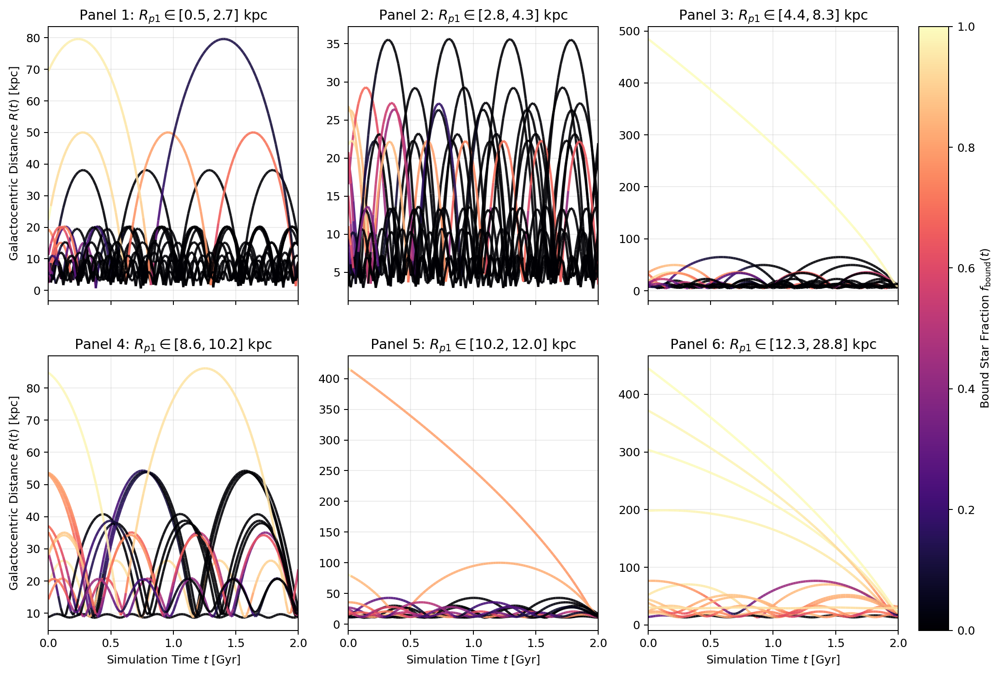
error_percentage_by_perigalacticon_GAT_noisy_5obs.png
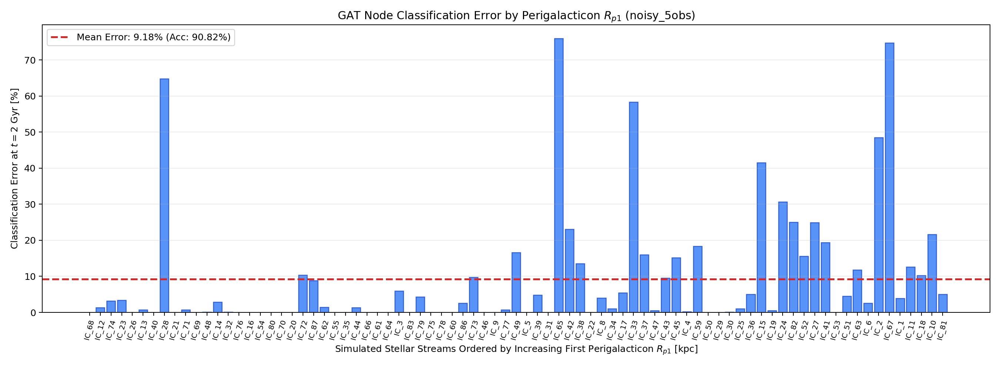
live_plots_GNN_noisy_5obs.png
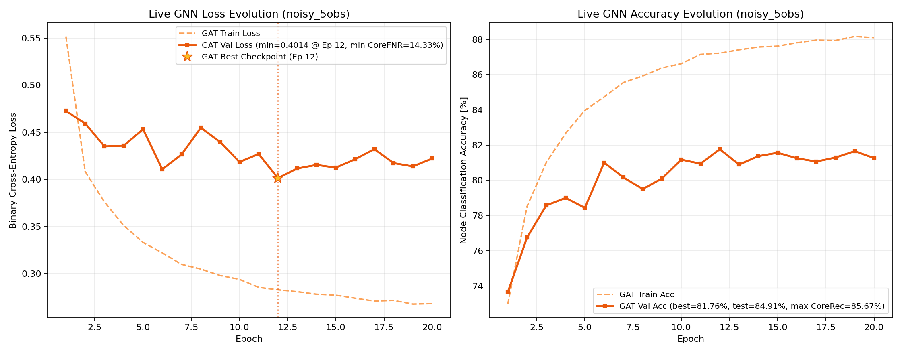
prediction_GAT_ID11_output100_noisy_5obs.png
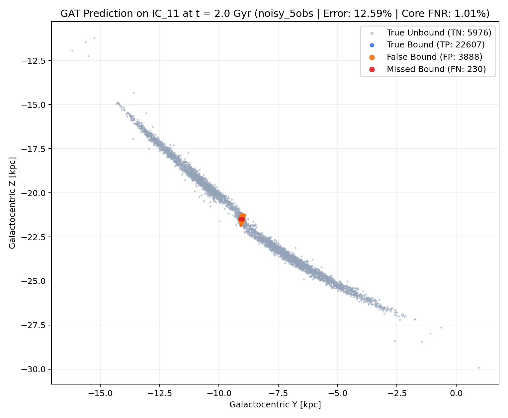
prediction_GAT_ID1_output100_noisy_5obs.png
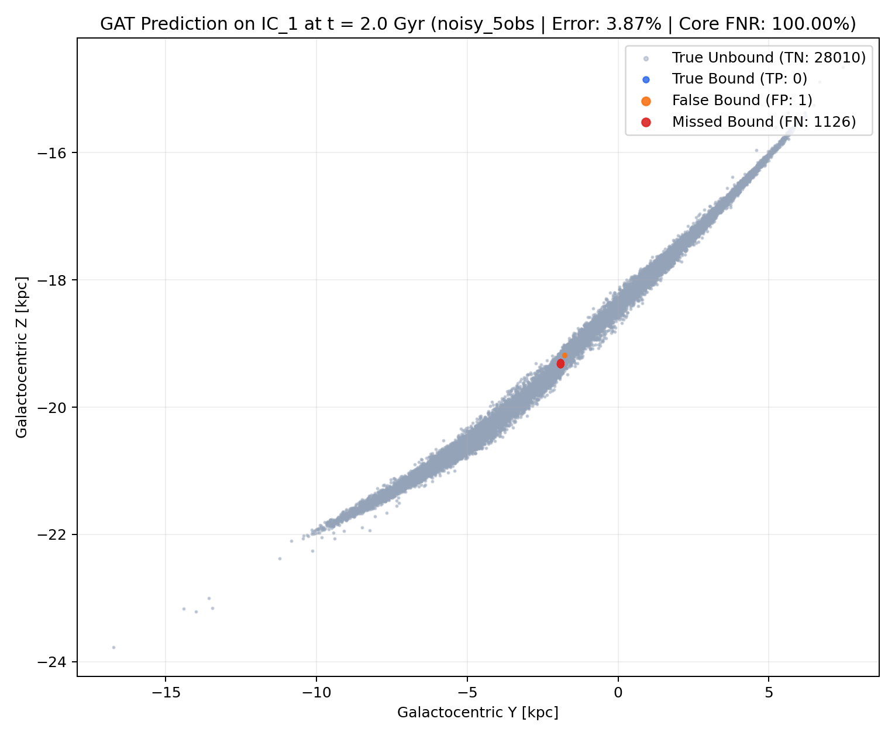
prediction_GAT_ID53_output100_noisy_5obs.png
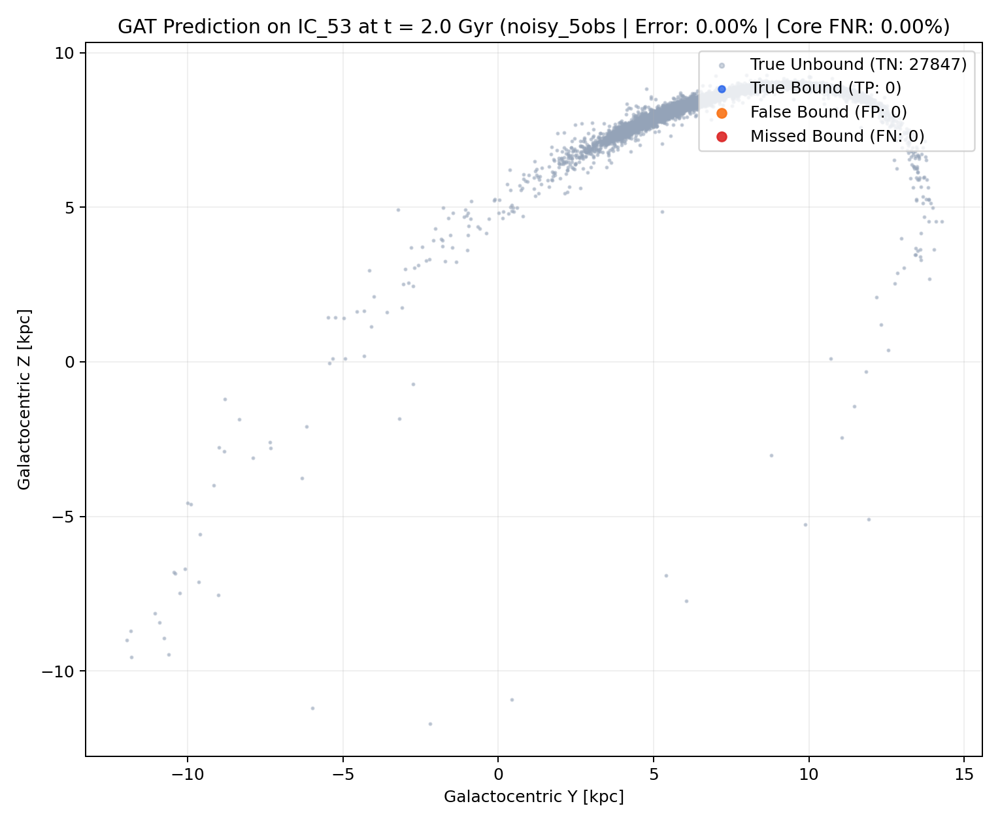
prediction_GAT_ID70_output100_noisy_5obs.png
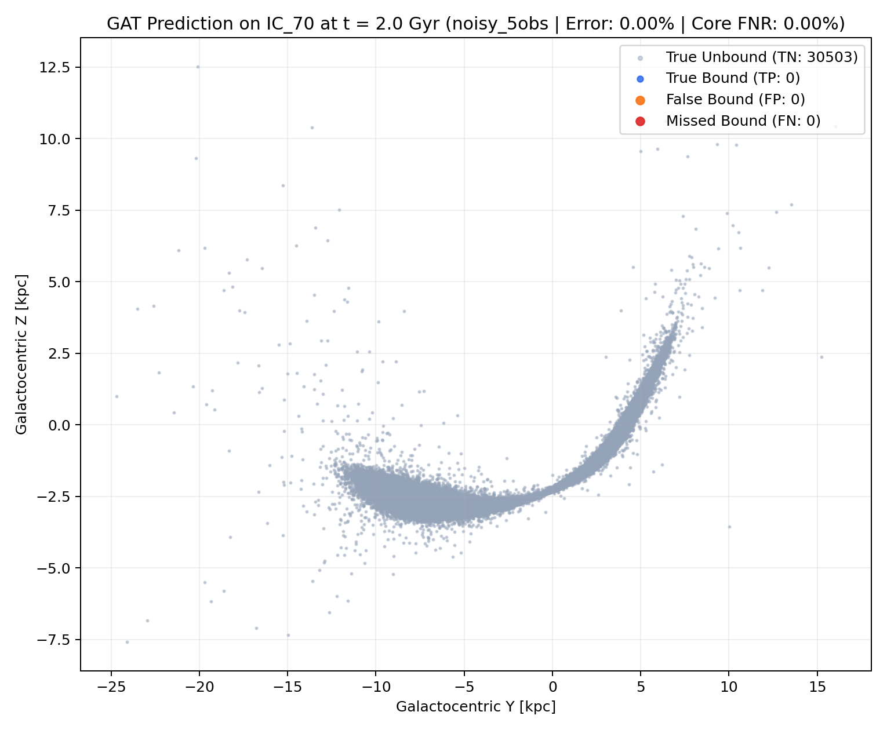
prediction_GAT_ID74_output100_noisy_5obs.png
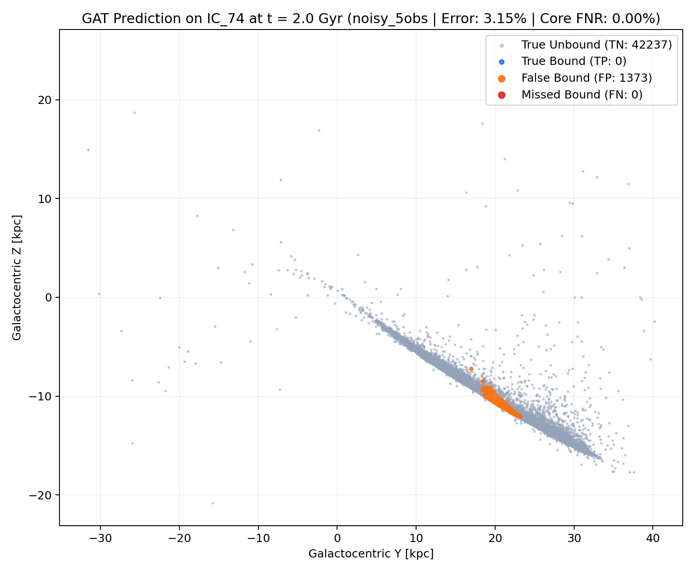
prediction_GAT_ID81_output100_noisy_5obs.png
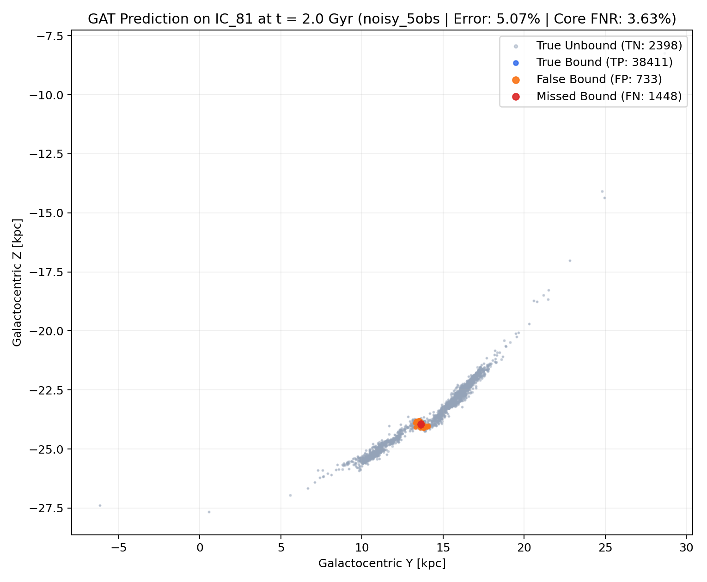
seeds_positions_unbiased.png
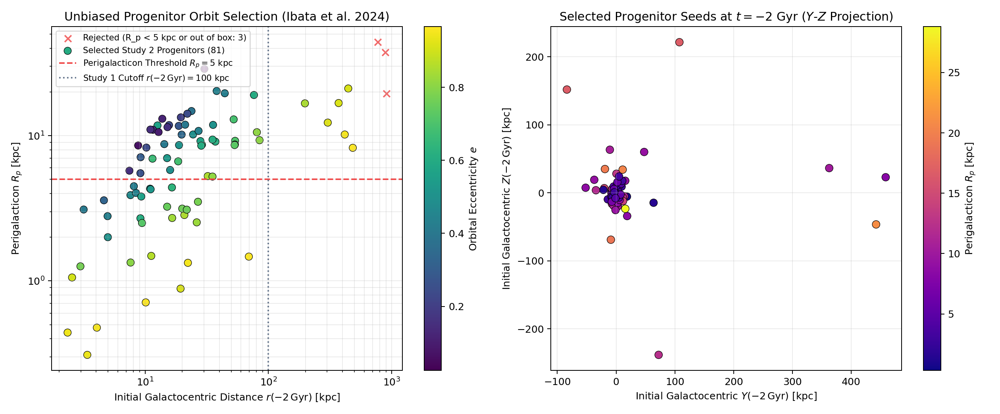
spectral_analysis_GNN_noisy_5obs.png
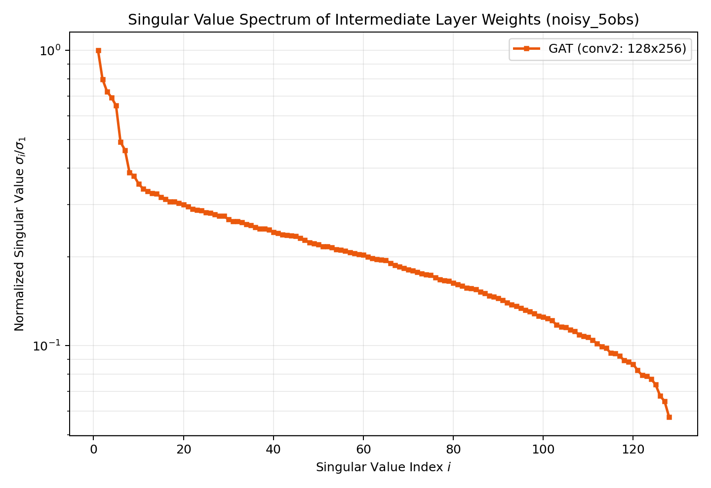
surviving_core_fnr_by_perigalacticon_GAT_noisy_5obs.png
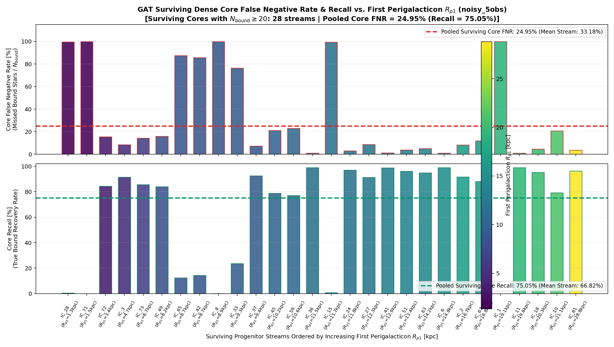